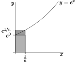
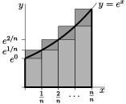

Subsection 1.1.2 Optional — A more rigorous area computation
In Example 1.1.1 above we considered the area of the region \(\big\{\ (x,y)\ \big|\ 0\le y\le e^x\text{,}\) \(0\le x\le 1\ \big\}\text{.}\) We approximated that area by the area of a union of \(n\) thin rectangles. We then claimed that upon taking the number of rectangles to infinity, the approximation of the area became the exact area. However we did not justify the claim. The purpose of this optional section is to make that calculation rigorous.
The broad set-up is the same. We divide the region up into \(n\) vertical strips, each of width \(\frac1n\) and we then approximate those strips by rectangles. However rather than an uncontrolled approximation, we construct two sets of rectangles — one set always smaller than the original area and one always larger. This then gives us lower and upper bounds on the area of the region. Finally we make use of the squeeze theorem 9 Recall that if we have 3 functions \(f(x), g(x), h(x)\) that satisfy \(f(x) \leq g(x) \leq h(x)\) and we know that \(\lim_{x \to a} f(x) = \lim_{x\to a} h(x) = L\) exists and is finite, then the squeeze theorem tells us that \(\lim_{x\to a} g(x) = L\text{.}\) to establish the result.
- To find our upper and lower bounds we make use of the fact that \(e^x\) is an increasing function. We know this because the derivative \(\diff{}{x}e^x=e^x\) is always positive. Consequently, the smallest and largest values of \(e^x\) on the interval \(a\le x\le b\) are \(e^a\) and \(e^b\text{,}\) respectively.
-
In particular, for \(0\le x\le \frac{1}{n}\text{,}\) \(e^x\) takes values only between \(e^0\) and \(e^{\frac{1}{n}}\text{.}\) As a result, the first strip
\begin{gather*} \big\{\ (x,y)\ \big|\ 0\le x\le \frac{1}{n},\ 0\le y\le e^x\ \big\} \end{gather*}- contains the rectangle of \(0\le x\le \frac{1}{n}\text{,}\) \(0\le y\le e^0\) (the lighter rectangle in the figure on the left below) and
- is contained in the rectangle \(0\le x\le \frac{1}{n}\text{,}\) \(0\le y\le e^{\frac{1}{n}}\) (the largest rectangle in the figure on the left below).
Hence
\begin{gather*} \frac{1}{n}e^{0} \le {\rm Area} \big\{\ (x,y)\ \big|\ 0\le x\le \frac{1}{n},\ 0\le y\le e^x\ \big\} \le \frac{1}{n}e^{\frac{1}{n}} \end{gather*} -
Similarly, for the second, third, …, last strips, as in the figure on the right above,
\begin{align*} \frac{1}{n}e^{\frac{1}{n}} &\le {\rm Area}\big\{\ (x,y)\ \big|\ \frac{1}{n}\le x\le \frac{2}{n},\ 0\le y\le e^x\ \big\} \ \ \ \le \frac{1}{n}e^{\frac{2}{n}}\\ \frac{1}{n}e^{\frac{2}{n}} &\le {\rm Area}\big\{\ (x,y)\ \big|\ \frac{2}{n}\le x\le \frac{3}{n},\ 0\le y\le e^x\ \big\} \ \ \ \le \frac{1}{n}e^{\frac{3}{n}}\\ & \vdots\\ \frac{1}{n}e^{\frac{(n-1)}{n}} &\le {\rm Area}\big\{\ (x,y)\ \big|\ \frac{(n-1)}{n}\le x\le \frac{n}{n},\ 0\le y\le e^x\ \big\} \le\frac{1}{n}e^{\frac{n}{n}} \end{align*} -
Adding these \(n\) inequalities together gives
\begin{align*} &\frac{1}{n}\left(1+e^{\frac{1}{n}}+\cdots+e^{\frac{(n-1)}{n}}\right)\\ &\le {\rm Area}\big\{\ (x,y)\ \big|\ 0\le x\le 1,\ 0\le y\le e^x\ \big\}\\ &\le \frac{1}{n}\left(e^{\frac{1}{n}}+e^{\frac{2}{n}}+\cdots+ e^{\frac{n}{n}}\right) \end{align*} - We can then recycle equation 1.1.3 with \(r=e^{\frac1n}\text{,}\) so that \(r^n=\left(e^{\frac{1}{n}}\right)^n=e\text{.}\) Thus we have\begin{gather*} \frac{1}{n}\frac{e-1}{e^{\frac{1}{n}}-1} \le {\rm Area}\big\{\ (x,y)\ \big|\ 0\le x\le 1,\ 0\le y\le e^x\ \big\} \le \frac{1}{n}e^{\frac{1}{n}}\frac{e-1}{e^{\frac{1}{n}}-1} \end{gather*}where we have used the fact that the upper bound is a simple multiple of the lower bound:\begin{align*} \left(e^{\frac{1}{n}}+e^{\frac{2}{n}}+\cdots+ e^{\frac{n}{n}}\right) &= e^{\frac{1}{n}}\left(1+e^{\frac{1}{n}}+\cdots +e^{\frac{(n-1)}{n}}\right). \end{align*}
-
We now apply the squeeze theorem to the above inequalities. In particular, the limits of the lower and upper bounds are \(\lim_{n\rightarrow\infty}\frac{1}{n}\frac{e-1}{e^{\frac{1}{n}}-1}\) and \(\lim_{n\rightarrow\infty}\frac{1}{n}e^{\frac{1}{n}}\frac{e-1}{e^{\frac{1}{n}}-1}\text{,}\) respectively. As we did near the end of Example 1.1.2, we make these limits look more familiar by renaming \(\frac{1}{n}\) to \(X\text{.}\) As \(n\) tends to infinity, \(X\) tends to \(0\text{,}\) so the limits of the lower and upper bounds are
\begin{align*} \lim_{n\rightarrow\infty}\frac{1}{n}\frac{e-1}{e^{\frac{1}{n}}-1} &=(e-1)\lim_{X=\frac{1}{n}\rightarrow 0}\frac{X}{e^X-1} =e-1 \end{align*}(by l'Hôpital's rule) and
\begin{align*} \lim_{n\rightarrow\infty}\frac{1}{n}e^{\frac{1}{n}}\frac{e-1}{e^{\frac{1}{n}}-1} &=(e-1)\lim_{X=\frac{1}{n}\rightarrow 0}\cdot \frac{Xe^X}{e^X-1}\\ &=(e-1)\lim_{X\to 0}e^X \cdot \lim_{X=\to 0}\frac{X}{e^X-1}\\ &=(e-1) \cdot 1 \cdot 1 \end{align*}Thus, since the exact area is trapped between the lower and upper bounds, the squeeze theorem then implies that
\begin{align*} \text{Exact area} &= e-1. \end{align*}